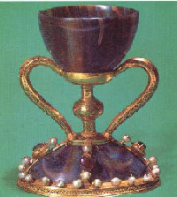
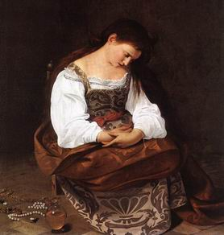

O Santo Graal ou Sangreal

O Santo Graal
Langdon identifica Sangreal como o nome histórico comum para os documentos e relíquias
que constituem o que hoje conhecemos como o Santo Graal. Teabing explica depois que, com
tempo, esse termo foi dividido e empregado tento nas lendas quanto na Teologia, produzindo
San Greal - Santo Graal. Contudo, se a divisão fosse feita em outro ponto, teríamos sang real,
significando "sangue real".
Há tantas teorias sobre como e onde a história do Santo Graal surgiu quanto há versões do Graal em si.
Entre as que foram identificadas por críticos e escritores estão: mitos celtas e outros mitos da Europa
ocidental anteriores ao cristianismo, mitologias bizantinas e tradições cristãs ortodixas do Oriente,
um código para a linhagem secreta de Cristo, práticas de antigos cultos persas, cerimônias de veneração
da natureza do Oriente Médio pré-cristão, simbologia dos alquimistas e muitas outras.
A versão moderna da história do Santo Graal foi disseminada, na transição entre os séculos XII
e XIII, por diversos autores, em diversas línguas, incluindo francês, inglês, alemão, espanhol e
galês. O mais antigo romance do Graal ainda existente é o Perceval, de Chrétien de Troyes.

Pintura de Maria Madalena Grávida
Feita Por Caravaggio em 1596
O Graal, como objeto, é descrito de várias formas por diferentes autores. Já surgiu sob a forma
de uma pedra, um objeto feito de ouro com pedras preciosas, um relicário e um cálice. O sentido
de sua busca tembém apresenta variações. Em uma delas, na qul o guardião do Graal é conhecido
como o Rei Pescador, encontrá-lo significa um retorno do reino à saúde e à prosperidade. E essa
narrativa tembém enfatiza uma intenção mais pessoal: para muitos, trata-se de uma jornada esperitual
interna rumo à iluminação e á comunhão com Deus.
Sejam quais forem a sua história e signicado como relíquia ou idéia, cada um dos personagens do
Código da Vinci está envolvido na busca do Graal, e a versão de Dan Brown para essa lenda
tem um sentido completamente novo. "O maior encobrimento da história da humanidade", diz
Teabing. "Não só Jesus era casado, mas também era pai. Minha cara, Maria Madalena era o
Vaso Sagrado. Era o cálice que concebeu a descendência do sangre real de Cristo."